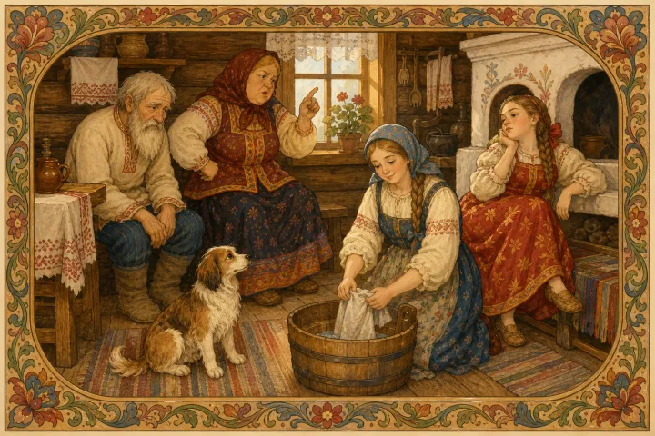
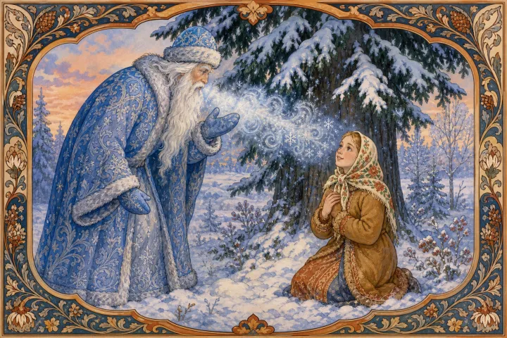
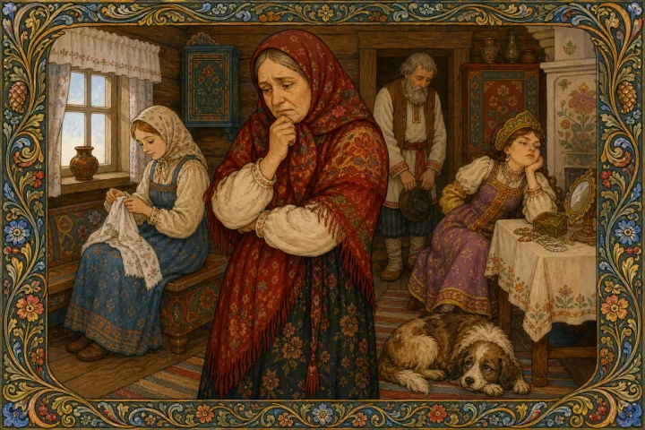

Жил старик со старухой. У старика была дочь — тихая, работящая, ласковая. У старухи тоже была дочь, да избалованная: всё ей подай, всё за неё сделай.
Падчерица вставала до света: воду носила, печь топила, избу мела, скотину кормила. А мачеха всё ворчала:
— Неловкая! Ленивая! Не так метёшь, не там ставишь!
Девушка молчала, только слёзы утирала.
Наконец мачеха велела старику:
— Вези свою дочь в лес. Не хочу её больше видеть.
Заплакал старик, да перечить не смел. Посадил дочь в сани, укутал старым платком и повёз в тёмный зимний лес. Оставил под высокой елью и сказал:
— Прости меня, доченька.
Вернулся домой с тяжёлым сердцем.
Сидит девушка под елью. Снег кругом белый, звёзды над головой холодные, мороз ветки щёлкает. Вдруг слышит: потрескивает кто-то по деревьям, с ёлки на ёлку поскакивает.
Это Морозко идёт — синий кафтан, белая борода, ледяной посох.
— Тепло ли тебе, девица? Тепло ли тебе, красная?
А девушка

едва губами шевелит:
— Тепло, Морозушко, тепло, батюшка.
Морозко ниже спустился, сильнее холодом дохнул:
— Тепло ли тебе, девица? Тепло ли тебе, красная?
— Тепло, Морозушко, тепло, милый.
Удивился Морозко её кротости. Укутал девушку тёплой шубой, положил перед ней сундук с богатыми дарами: сарафаны шёлковые, платки узорные, серебро да жемчуг.
Утром мачеха говорит старику:
— Поезжай, привези свою дочь. Небось замёрзла.
Поехал старик и глазам не поверил: сидит его дочь живая, румяная, в дорогой шубе, рядом сундук с подарками. Привёз её домой.
Залаяла собачка под столом:
— Тяв-тяв! Старикову дочь в золоте везут!
Мачеха увидела богатство, глаза разгорелись.
— Вези и мою дочь в лес! Пусть Морозко и её одарит.
Отвёз старик мачехину дочь под ту же ель. Сидит она, сердится:
— Холодно! Долго ли ждать?
Пришёл Морозко, спрашивает:
— Тепло ли тебе, девица?
— Сам видишь, холодно! Убирайся давай, старик морозный. Подарки неси скорее!
Ничего не ответил Морозко. Только посохом стукнул, холодом дохнул и ушёл.
Утром поехал старик за девушкой. Нашёл её без голоса, без тепла. Привёз домой, и поняла мачеха, да поздно: ласковое слово и доброе сердце дороже золота, а жадность счастья не приносит.
